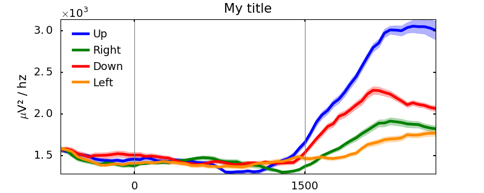
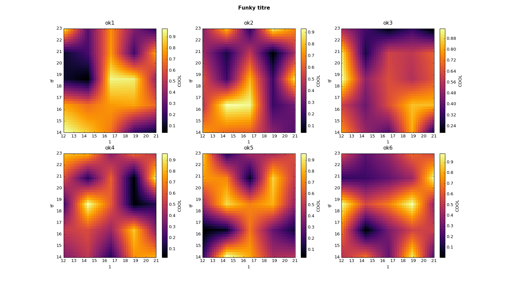

from brainpipe.visual import *
1-D graphics¶
Border plot¶
-
class
visual.BorderPlot(time, x, y=None, kind='sem', color='', alpha=0.2, linewidth=2, legend='', ncol=1, **kwargs)[source] Plot a signal with it associated deviation. The function plot the mean of the signal, and the deviation (std) or standard error on the mean (sem) in transparency.
- Args:
- time: array/limit
- The time vector of the plot (len(time)=N)
- x: numpy array
- The signal to plot. One dimension of x must be the length of time N. The other dimension will be consider to define the deviation. For example, x.shape = (N, M)
- Kargs:
- y: numpy array, optional, [def: None]
- Label vector to separate the x signal in diffrent classes. The length of y must be M. If no y is specified, the deviation will be computed for the entire array x. If y is composed with integers Example: y = np.array([1,1,1,1,2,2,2,2]), the function will geneate as many curve as the number of unique classes in y. In this case, two curves are going to be considered.
- kind: string, optional, [def: ‘sem’]
- Choose between ‘std’ for standard deviation and ‘sem’, standard error on the mean (wich is: std(x)/sqrt(N-1))
- color: string or list of strings, optional
- Specify the color of each curve. The length of color must be the same as the length of unique classes in y.
- alpha: int/float, optional [def: 0.2]
- Control the transparency of the deviation.
- linewidth: int/float, optional, [def: 2]
- Control the width of the mean curve.
- legend: string or list of strings, optional, [def: ‘’]
- Specify the label of each curve and generate a legend. The length of legend must be the same as the length of unique classes in y.
- ncol: integer, optional, [def: 1]
- Number of colums for the legend
- kwargs:
- Supplementar arguments to control each suplot: title, xlabel, ylabel (which can be list for each subplot) xlim, ylim, xticks, yticks, xticklabels, yticklabels, style.
- Return:
- The axes of the plot.

Border plot example
p-value plot¶
-
visual.addPval(ax, pval, y=0, x=None, p=0.05, minsucc=1, color='b', shape='-', lw=2, **kwargs)[source] Add significants p-value to an existing plot
- Args:
- ax: matplotlib axes
- The axes to add lines. Use for example plt.gca()
- pval: vector
- Vector of pvalues
- Kargs:
- y: int/float
- The y location of your p-values
- x: vector
- x vector of the plot. Must have the same size as pval
- p: float
- p-value threshold to plot
- minsucc: int
- Minimum number of successive significants p-values
- color: string
- Color of th p-value line
- shape: string
- Shape of th p-value line
- lw: int
- Linewidth of th p-value line
- kwargs:
- Any supplementar arguments are passed to the plt.plot() function
- Return:
- ax: updated matplotlib axes
Add p-values to an existing plot
Continuous color¶
-
class
visual.continuouscol(ax, y, x=None, color=None, cmap='inferno', pltargs={}, **kwargs)[source] Plot signal with continuous color
- Args:
- ax: matplotlib axes
- The axes to add lines. Use for example plt.gca()
- y: vector
- Vector to plot
- Kargs:
- x: vector, optional, [def: None]
- Values on the x-axis. x should have the same length as y. By default, x-values are 0, 1, ..., len(y)
- color: vector, optional, [def: None]
- Values to colorize the line. color should have the same length as y.
- cmap: string, optional, [def: ‘inferno’]
- The name of the colormap to use
- pltargs: dict, optional, [def: {}]
- Arguments to pass to the LineCollection() function of matplotlib
- kwargs:
- Supplementar arguments to control each suplot: title, xlabel, ylabel (which can be list for each subplot) xlim, ylim, xticks, yticks, xticklabels, yticklabels, style.
Continuous color-line
1-D or 2-D graphics¶
Add lines¶
-
class
visual.addLines(ax, vLines=[], vColor=None, vShape=None, vWidth=None, hLines=[], hColor=None, hWidth=None, hShape=None)[source] Add vertical and horizontal lines to an existing plot.
- Args:
- ax: matplotlib axes
- The axes to add lines. USe for example plt.gca()
- Kargs:
- vLines: list, [def: []]
- Define vertical lines. vLines should be a list of int/float
- vColor: list of strings, [def: [‘gray’]]
- Control the color of the vertical lines. The length of the vColor list must be the same as the length of vLines
- vShape: list of strings, [def: [‘–’]]
- Control the shape of the vertical lines. The length of the vShape list must be the same as the length of vLines
- hLines: list, [def: []]
- Define horizontal lines. hLines should be a list of int/float
- hColor: list of strings, [def: [‘black’]]
- Control the color of the horizontal lines. The length of the hColor list must be the same as the length of hLines
- hShape: list of strings, [def: [‘-‘]]
- Control the shape of the horizontal lines. The length of the hShape list must be the same as the length of hLines
- Return:
- The current axes
- Example:
>>> # Create an empty plot: >>> plt.plot([]) >>> plt.ylim([-1, 1]), plt.xlim([-10, 10]) >>> addLines(plt.gca(), vLines=[0, -5, 5, -7, 7], vColor=['k', 'r', 'g', 'y', 'b'], >>> vWidth=[5, 4, 3, 2, 1], vShape=['-', '-', '--', '-', '--'], >>> hLines=[0, -0.5, 0.7], hColor=['k', 'r', 'g'], hWidth=[5, 4, 3], >>> hShape=['-', '-', '--'])
Quickly add some lines to your plot
tilerplot¶
-
class
visual.tilerplot[source] Automatic tiler plot for 1, 2 and 3D data.
-
plot1D(fig, y, x=None, maxplot=10, figtitle='', sharex=False, sharey=False, subdim=None, transpose=False, color='b', subspace=None, **kwargs)[source] Simple one dimentional plot
- Args:
- y: array
- Data to plot. y can either have one, two or three dimensions. If y is a vector, it will be plot in a simple window. If y is a matrix, all values inside are going to be superimpose. If y is a 3D matrix, the first dimension control the number of subplots.
- x: array, optional, [def: None]
- x vector for plotting data.
- Kargs:
- figtitle: string, optional, [def: ‘’]
- Add a name to your figure
- subdim: tuple, optional, [def: None]
- Force subplots to be subdim=(n_colums, n_rows)
- maxplot: int, optional, [def: 10]
- Control the maximum number of subplot to prevent very large plot. By default, maxplot is 10 which mean that only 10 subplot can be defined.
- transpose: bool, optional, [def: False]
- Invert subplot (row <-> column)
- color: string, optional, [def: ‘b’]
- Color of the plot
- subspace: dict, optional, [def: None]
- Control the distance in subplots. Use ‘left’, ‘bottom’, ‘right’, ‘top’, ‘wspace’, ‘hspace’. Example: {‘top’:0.85, ‘wspace’:0.8}
- kwargs:
- Supplementar arguments to control each suplot: title, xlabel, ylabel (which can be list for each subplot) xlim, ylim, xticks, yticks, xticklabels, yticklabels, style, dpax, rmax.
-
plot2D(fig, y, xvec=None, yvec=None, cmap='inferno', colorbar=True, cbticks='minmax', ycb=-10, cblabel='', under=None, over=None, vmin=None, vmax=None, sharex=False, sharey=False, textin=False, textcolor='w', textype='%.4f', subdim=None, mask=None, interpolation='none', resample=(0, 0), figtitle='', transpose=False, maxplot=10, subspace=None, contour=None, pltargs={}, pltype='pcolor', ncontour=10, polar=False, **kwargs)[source] Plot y as an image
- Args:
- fig: figure
- A matplotlib figure where plotting
- y: array
- Data to plot. y can either have one, two or three dimensions. If y is a vector, it will be plot in a simple window. If y is a matrix, all values inside are going to be superimpose. If y is a 3D matrix, the first dimension control the number of subplots.
- Kargs:
- xvec, yvec: array, optional, [def: None]
- Vectors for y and x axis of each picture
- cmap: string, optional, [def: ‘inferno’]
- Choice of the colormap
- colorbar: bool/string, optional, [def: True]
- Add or not a colorbar to your plot. Alternatively, use ‘center-max’ or ‘center-dev’ to have a centered colorbar
- cbticks: list/string, optional, [def: ‘minmax’]
- Control colorbar ticks. Use ‘auto’ for [min,(min+max)/2,max], ‘minmax’ for [min, max] or your own list.
- ycb: int, optional, [def: -10]
- Distance between the colorbar and the label.
- cblabel: string, optional, [def: ‘’]
- Label for the colorbar
- under, over: string, optional, [def: ‘’]
- Color for everything under and over the colorbar limit.
- vmin, vmax: int/float, optional, [def: None]
- Control minimum and maximum of the image
- sharex, sharey: bool, optional, [def: False]
- Define if subplots should share x and y
- textin: bool, optional, [def: False]
- Display values inside the heatmap
- textcolor: string, optional, [def: ‘w’]
- Color of values inside the heatmap
- textype: string, optional, [def: ‘%.4f’]
- Way of display text inside the heatmap
- subdim: tuple, optional, [def: None]
- Force subplots to be subdim=(n_colums, n_rows)
- interpolation: string, optional, [def: ‘none’]
- Plot interpolation
- resample: tuple, optional, [def: (0, 0)]
- Interpolate the map for a specific dimension. If (0.5, 0.1), this mean that the programme will insert one new point on x-axis, and 10 new points on y-axis. Pimp you map and make it sooo smooth.
- figtitle: string, optional, [def: ‘’]
- Add a name to your figure
- maxplot: int, optional, [def: 10]
- Control the maximum number of subplot to prevent very large plot. By default, maxplot is 10 which mean that only 10 subplot can be defined.
- transpose: bool, optional, [def: False]
- Invert subplot (row <-> column)
- subspace: dict, optional, [def: None]
- Control the distance in subplots. Use ‘left’, ‘bottom’, ‘right’, ‘top’, ‘wspace’, ‘hspace’. Example: {‘top’:0.85, ‘wspace’:0.8}
- contour: dict, optional, [def: None]
- Add a contour to your 2D-plot. In order to use this parameter, define contour={‘data’:yourdata, ‘label’:[yourlabel], kwargs} where yourdata must have the same shape as y, level must float/int from smallest to largest. Use kwargs to pass other arguments to the contour function
- kwargs:
- Supplementar arguments to control each suplot: title, xlabel, ylabel (which can be list for each subplot) xlim, ylim, xticks, yticks, xticklabels, yticklabels, style dpax, rmax.
-

Automatic 1D and 2D plot
Tools¶
-
visual.rmaxis(ax, rmax)[source]¶ Remove ticks and axis of a existing plot
- Args:
- ax: matplotlib axes
- Axes to remove axis
- rmax: list of strings
- List of axis name to be removed. For example, use [‘left’, ‘right’, ‘top’, ‘bottom’]
-
visual.despine(ax, dpax, outward=10)[source]¶ Despine axis of a existing plot
- Args:
- ax: matplotlib axes
- Axes to despine axis
- dpax: list of strings
- List of axis name to be despined. For example, use [‘left’, ‘right’, ‘top’, ‘bottom’]
- Kargs:
- outward: int/float, optional, [def: 10]
- Distance of despined axis from the original position.